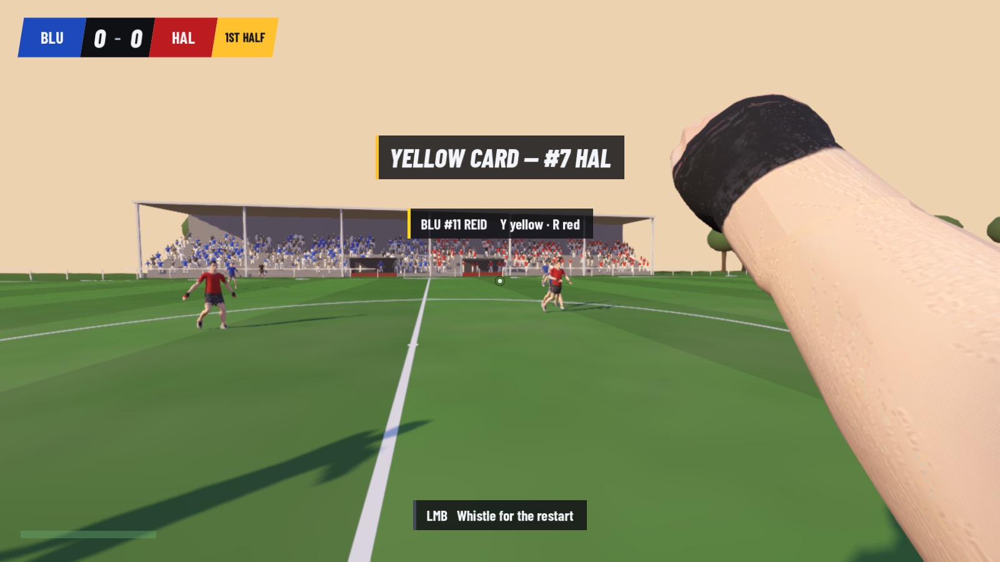
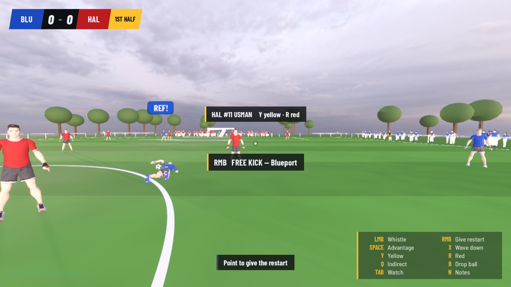
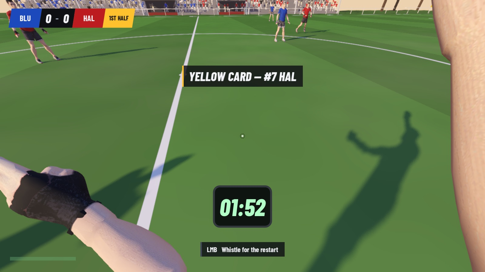
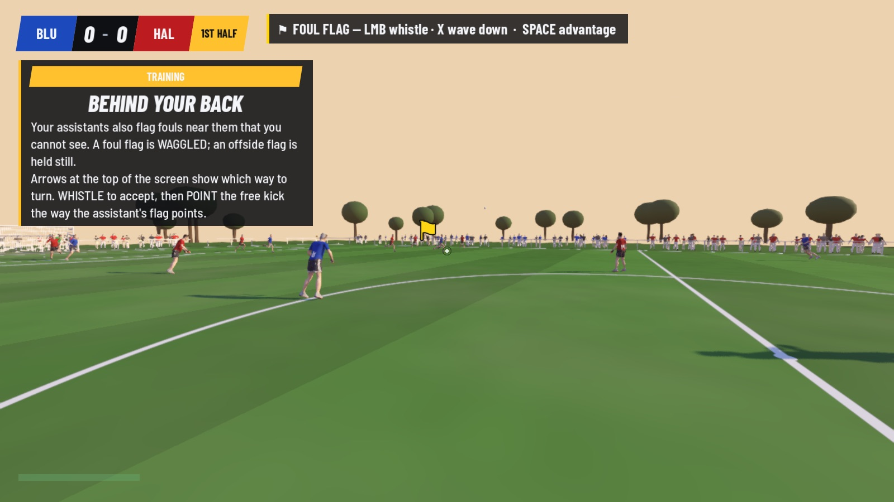
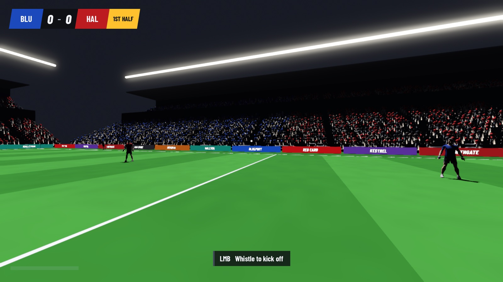
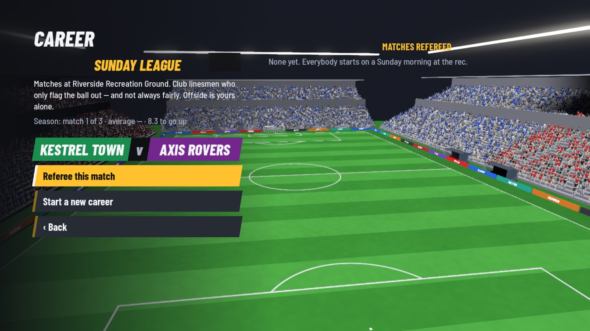
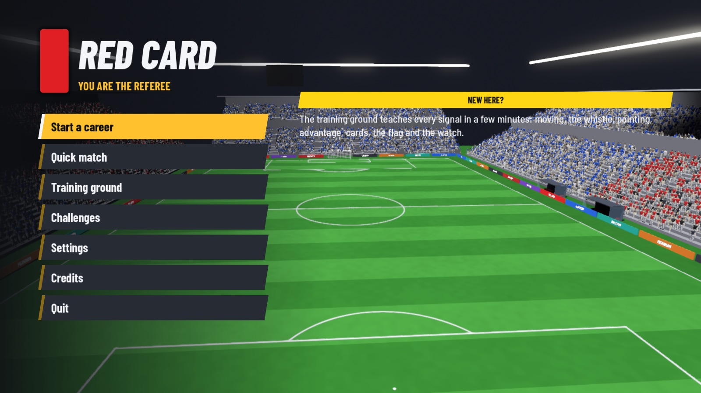

You are the referee. Not the footballer.
Eleven a side, on foot, for the full ninety. The match is simulated for real, so the truth of every tackle, every offside and every ball over the line already exists. Your job is to be in the right place to see it — and to get it right in front of thirty thousand people who are certain you did not.
The premiseOne person decides what happened
Positioning is half the job.
Every other football game puts you in the boots of someone who can run faster than you. This one puts you twenty metres behind play with a bad angle, and the contact happens anyway.
Every tackle's outcome, every offside position and every ball over the line is recorded as it happens and judged against the IFAB Laws of the Game. The game never shows you the answer in the moment. It only asks what you saw — and whether you were close enough to see it.
Afterwards, an assessor replays your big decisions from your own eyes and marks you out of ten. That is the loop: run, look, decide, and find out.

The jobEvery decision, on one whistle
Not a menu of three options at a cutscene. The full set, available at any moment of the match, on the keys under your fingers — and every one of them can be the wrong call.
Short for a foul, held long for the ones that need to carry. The match stops when you say it stops, and not before.
Point and give it: direct or indirect free kick, throw-in, corner, goal kick, dropped ball. Pointing the wrong way is a decision too.
Wave it on and let the attack run. If it breaks down two seconds later, everyone in the ground remembers that you had the whistle in your mouth.
Yellow and red, shown to whichever player you are looking at. The last man, the second yellow, the dive — the Laws say which, and so does the assessor.
They raise the flag for offside and they are sometimes wrong. Wave it down and the decision — and the blame — is yours alone.
Arm straight up and held there until the ball is touched by a second player. Forget to raise it and the goal should not have stood.
Ninety minutes plus whatever you add. Added time is your number, and the away side will have an opinion about it.
Who you booked and what for, carried through the match, because at the eighty-eighth minute you will need to know.
At the top of the career a voice in your ear tells you to take another look. Going to the monitor is still your call, and so is overruling yourself.
CareerVillage field to cup final
You start on a recreation ground where the ball goes in a hedge and the only people watching are substitutes and a dog. You finish under floodlights with VAR in your ear. Nothing about the Laws changes. Everything about the consequences does.
A village recreation ground. Everybody starts here. Club linesmen who only fly the flag one way, and not always fairly.
A real stand, a real crowd, and assistants who are neutral but still human.
Ten thousand people who came to watch football and will happily watch you instead.
Floodlights, a full stadium and VAR. Every decision is looked at twice — once by you, once by everybody.
Learn the job without a scoreline attached. Signals, positioning, keeping up with play, reading the offside line, and the mechanics of every restart, one at a time.
MediaFrom the build, not a render
New in v0.2.4: a free kick is now taken from where the offence happened — the ball was still rolling when the restart was worked out, and a kick given inside the penalty area was quietly moved to the edge of it. In v0.2.3: the pitch and the players stop looking flat — ambient light down and the sun up so everything has a lit side and a shaded one, contact shadows under boots and posts, mown stripes that change as you move round the ground, and a rim of sky down every player. Before that, in v0.2.2: the moments either side of the ninety minutes, filmed inside the running game — the walkout with both teams and you out last, a goal from the front of the man who scored, a sending-off, the last whistle of a cup final, and a title sequence. Any key skips any of them.
In v0.2.0: a coin toss with the captains before kick-off; the sounds a referee works by — contact in a tackle, players appealing from where they stand, and the crowd gasping at the one you did not give; players who come to argue and can be waved away, with the assessor marking you on how you handle them; a map in the report of where you stood for every decision; every verb on a key as well as the mouse; and footwork that was measured rather than guessed at, down to the keeper diving instead of falling over.
These are screenshots of the actual build, taken from the game and not touched up. The art is plain on purpose while the refereeing is being proved out — what is being tested here is whether the job is interesting, not whether the grass looks expensive.






DownloadFree · no account · no installer
Red Card is free. There is no launcher, no account and no telemetry — you download one file and run it. Both builds come straight from the project's GitHub releases.
Red.Card.zip · 93 MB · universal
Unzip and drag Red Card.app wherever you like. The build is unsigned, so the first time you open it, right-click the app and choose Open, then confirm — a normal double-click will be blocked by Gatekeeper.
Red.Card.exe · 156 MB · 64-bit
One file, no installer — put it in a folder and run it. SmartScreen will warn you because the build is unsigned: choose More info, then Run anyway.
Both builds are unsigned. Luqman is one person making games, not a company with an Apple Developer certificate and a Microsoft code-signing key, so macOS and Windows will both tell you they cannot verify the publisher. The steps above get past it. The source is on GitHub if you would rather read it and build it yourself.
DetailsWhat it is, honestly